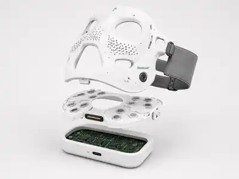

Conventional category
Surface treatment
- Manual or passive application
- Technique-dependent sessions
- Limited target confirmation
- Cosmetic-only narrative
WinVerse™ / SerotoniX™
SerotoniX™ is a personalised facial-activation platform in development—combining controlled facial neuromuscular stimulation, repeatable positioning, guided routines and an expanding evidence programme.
Beauty is the commercial beachhead. Momentary affective experience is the differentiation. Research is the expansion engine.

Designed to reduce dependence on manual movement, pressure and technique.
Fit and placement are treated as controlled parts of the experience.
Configuration, contact, completion and faults can be recorded.
The big idea
Most beauty technology treats the face as passive. SerotoniX™ is designed around controlled activation of expression-related facial muscles.
The ambition is not to place a broad therapeutic claim on an early product. It is to build a repeatable consumer ritual that can earn progressively stronger beauty, experience and affective evidence.
Conventional category
SerotoniX™ opportunity
Scientific spark
Three preregistered or controlled studies involving 47, 58 and 51 participants reported effects on emotion-related perception, momentary felt emotion or related physiological measures.
Stronger stimulation of smiling-related muscles produced more positive self-reports than stimulation of a frowning-related muscle, after accounting for discomfort.
Weak bilateral zygomaticus stimulation increased the likelihood of interpreting ambiguous expressions as happy and altered EEG correlates.
Early and later stimulation of smiling muscles increased happy categorisation of neutral faces; the early condition was associated with lower visual-processing load.
The research supports a differentiated product-development hypothesis. It does not yet establish treatment of stress, anxiety, depression or lasting mood improvement.
Read the evidence audit →One platform. Three benefit territories.
The first product-specific studies should test immediate, observable and commercially relevant outcomes before any larger wellbeing narrative.
Potential outcomes to validate include awake-looking appearance, visible vitality, temporary lift and perceived facial tone.
Potential outcomes to validate include subjective facial ease, readiness to re-engage and a structured transition between demanding activities.
Potential outcomes to validate include self-perceived presence, confidence and readiness before meetings, presentations or recordings.

The real USP
Fit. A facial interface designed for consistent contact and positioning.
Protocol. Validated combinations of location, intensity, timing and sequence.
Target engagement. Evidence that the intended muscles or facial action units were activated.
Data and claims. Session delivery, tolerance, response and claim-specific evidence.
Evidence and claim strategy
Verified delivery, fit and session completion.
Activation, ease, satisfaction and readiness.
Appearance, tone, contour and target engagement.
Momentary valence, perception and physiology.
Only after appropriate clinical evidence and strategy.
WinVerse™
The team combines company building, rehabilitation-technology commercialisation and scientific guidance. Planned research with UHN and KITE remains subject to grant approval and final institutional agreements.
Founder and CEO
Leads company direction, partnerships and the development of SerotoniX™ from concept towards an evidence-led product programme.

Co-founder · Strategic Lead
Rehabilitation-technology entrepreneur and industry strategist with more than two decades of experience across medical devices, robotics and international commercialisation.

Scientific Advisor
Biomedical engineer and rehabilitation researcher whose work spans neurorehabilitation, neuromodulation, functional electrical stimulation and neuroprostheses.
Closing proposition